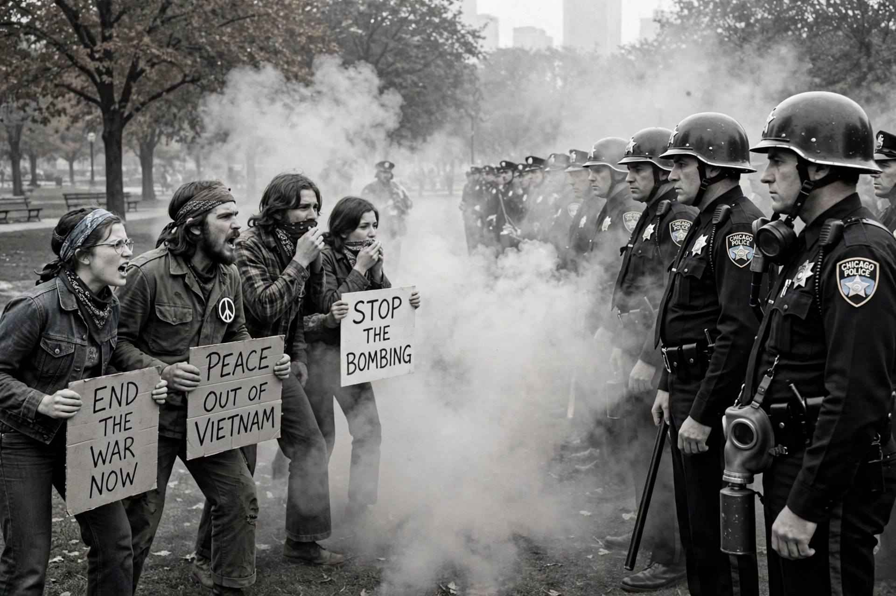

| 1968 Democratic National Convention protests | |
|---|---|
| Date | August 23–29, 1968 |
| Location | Chicago, Illinois, U.S. |
| Causes | Opposition to the Vietnam War; the draft; Democratic Party politics |
| Parties | Anti-war protesters (NMC, Yippies, SDS) vs. Chicago Police, Illinois National Guard, U.S. Army |
| Outcome | Hubert Humphrey nominated; Walker Report criticized police violence; trial of the Chicago Seven |

The 1968 Democratic National Convention protests were a series of anti-Vietnam War demonstrations held in Chicago, Illinois, during the Democratic National Convention of August 26–29, 1968. The convention, held at the International Amphitheatre, nominated Vice President Hubert Humphrey for president. Outside, some 10,000 protesters confronted roughly 23,000 police officers, National Guardsmen, and federal troops mobilized by Mayor Richard J. Daley. The clashes, filmed and broadcast nationally, became one of the defining images of the turmoil of 1968.
By 1968 the Vietnam War had deeply divided the Democratic Party. President Lyndon B. Johnson, battered by the Tet Offensive and Senator Eugene McCarthy's strong primary showing, announced on March 31 that he would not seek re-election. Senator Robert F. Kennedy entered the race and was assassinated in June. Humphrey, who had not contested the primaries, was positioned to win the nomination through delegates controlled by party leaders — a fact that enraged anti-war activists who regarded the process as rigged. Groups including the National Mobilization Committee to End the War in Vietnam (MOBE), Students for a Democratic Society, and the theatrical Youth International Party ("Yippies") of Abbie Hoffman and Jerry Rubin planned demonstrations in Chicago; the Yippies announced a satirical "Festival of Life" and nominated a pig, Pigasus, for president.
Daley refused permits for marches and overnight stays in the parks, ringed the convention hall with barbed wire, and put the police on twelve-hour shifts. Protesters camped in Lincoln Park were cleared nightly by police charges. The violence peaked on the night of Wednesday, August 28, outside the Conrad Hilton Hotel, where demonstrators chanting "The whole world is watching" were beaten by police in front of television cameras in what became known as the "Battle of Michigan Avenue". Hundreds of protesters and dozens of journalists were injured; police reported injuries of their own, and more than 600 people were arrested during the week.
An official study led by Daniel Walker, the Walker Report (Rights in Conflict, December 1968), concluded that the violence was substantially a "police riot", while also criticizing violent provocations by a minority of demonstrators. Federal prosecutors indicted eight men — Hoffman, Rubin, Tom Hayden, Rennie Davis, David Dellinger, John Froines, Lee Weiner, and Bobby Seale — for conspiracy and incitement under the new anti-riot provisions of the Civil Rights Act of 1968. Seale's case was severed after the judge ordered him bound and gagged in the courtroom, leaving the celebrated Chicago Seven; the defendants were acquitted of conspiracy, five were convicted of individual incitement charges, and all convictions were reversed on appeal.
Politically, the televised disorder damaged the Democrats: Humphrey lost narrowly to Richard Nixon in November. The debacle also spurred reforms — the McGovern–Fraser Commission — that transferred the power to choose nominees from party bosses to primary voters, reshaping American presidential politics.